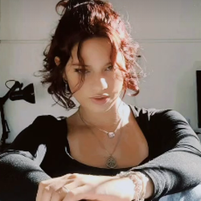
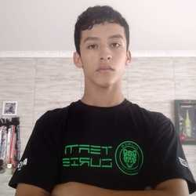

Este projeto de iniciação científica tem como foco principal o desenvolvimento de uma plataforma educacional digital voltada ao ensino de história, com ênfase na presença afro-brasileira em Florianópolis. A plataforma surge como resposta à necessidade de enfrentar o apagamento histórico da população negra na região, invisibilizada pela narrativa hegemônica açoriana.
Inspirados na concepção de Michel de Certeau sobre a "operação historiográfica", buscamos aproximar a produção acadêmica do cotidiano escolar, traduzindo obras como "História Diversa: Africanos e Descendentes na Ilha de Santa Catarina" em formatos acessíveis e atrativos para estudantes e educadores.
A plataforma integra vídeos autorais em formato de mini documentários, materiais didáticos complementares, questionários interativos e espaços comunitários para feedback, visando promover uma educação histórica crítica e inclusiva.
Conheça as pessoas por trás do projeto História Acessível
Integrante do Projeto
Estudante do curso técnico em Programação com interesse em unir tecnologia e educação. Busca aplicar seus conhecimentos em desenvolvimento para criar soluções digitais inovadoras no campo do ensino de história, promovendo acessibilidade e interatividade através da programação.

Integrante do Projeto
Professora de música com paixão pela história desde a adolescência. Traz sua experiência pedagógica musical para desenvolver metodologias criativas de ensino, acreditando que a interdisciplinaridade entre artes e história pode enriquecer o processo de aprendizagem e resgate cultural.

Integrante do Projeto
Apaixonado por história e tecnologia, encontra na programação uma forma de democratizar o acesso ao conhecimento histórico. Desenvolve interfaces e funcionalidades que tornam a aprendizagem mais dinâmica e acessível, conectando passado e presente através de soluções digitais inovadoras.
Orientador do Projeto
Professor de História e Humanas no SESI SENAI, com vasta experiência em educação. Orienta o projeto trazendo fundamentação teórica e metodológica, além de articular conhecimentos históricos com as demandas contemporâneas da educação profissional e tecnológica.
Nossa equipe multidisciplinar combina expertise em história, pedagogia e tecnologia para criar uma plataforma educacional inovadora que promove o resgate da memória afro-brasileira em Florianópolis.
Olimpíada Nacional em História do Brasil - Minhas conquistas
Como integrante da equipe "História Acessível", participei de duas edições da Olimpíada Nacional em História do Brasil, um importante evento que promove o estudo crítico da história nacional.
Equipe: OS MAQUIAVÉLICOS DE FLORIPA
Equipe: OS MAQUIAVÉLICOS DE FLORIPA
A Olimpíada Nacional em História do Brasil (ONHB) é um projeto desenvolvido pelo Departamento de História da Universidade Estadual de Campinas (UNICAMP) que tem como objetivo promover o estudo crítico da História do Brasil entre estudantes e professores de todo o país.
A participação na ONHB foi fundamental para o desenvolvimento do projeto História Acessível, proporcionando: